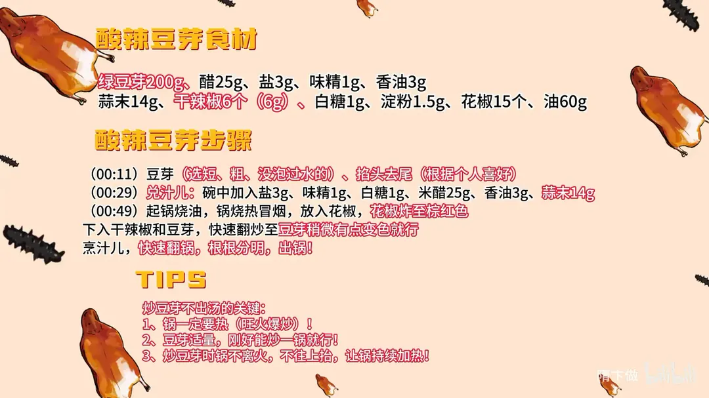

酸辣豆芽
隋卞一做。绿豆芽 200g 选短粗、没泡过水的，掐头去尾；花椒 15 个炸至棕红，再下干辣椒和豆芽旺火爆炒，最后烹入兑好的糖醋汁，全程锅不离火，根根分明不出汤。
原视频：https://www.bilibili.com/video/BV1aM4m1y7Ta
食材
绿豆芽、醋 等 11 样
| 类别 | 用料 | 用量 |
|---|---|---|
| 主料 | 绿豆芽 | 200g |
| 调料 | 醋（米醋） | 25g |
| 调料 | 盐 | 3g |
| 调料 | 味精 | 1g |
| 调料 | 香油 | 3g |
| 调料 | 蒜末 | 14g |
| 调料 | 干辣椒 | 6 个（6g） |
| 调料 | 白糖 | 1g |
| 调料 | 淀粉 | 1.5g |
| 调料 | 花椒 | 15 个 |
| 调料 | 油 | 60g |
步骤
- 择豆芽：选短、粗、没泡过水的绿豆芽，掐头去尾（根据个人喜好）。
- 兑汁儿：碗中加入 3g 盐、1g 味精、1g 白糖、25g 米醋、3g 香油、14g 蒜末，以及 1.5g 淀粉，搅匀备用。
- 炸花椒：起锅烧油 60g，锅烧到热冒烟，放入 15 个花椒，把花椒炸至棕红色。
- 爆炒：下入干辣椒和豆芽，快速翻炒至豆芽稍微有点变色就行。
- 烹汁儿：倒入兑好的汁儿，快速翻锅，炒到根根分明，出锅。
小贴士
- 炒豆芽不出汤的关键：锅一定要热，旺火爆炒。
- 豆芽量要适量，刚好能炒一锅就行，豆芽多了一锅炒不下就会出汤。
- 炒的时候锅不离火，不要把锅往上抬，让锅持续加热。
讲解要点
难度：★★★★☆（难点是锅温和下料量，家里火弱，慢一拍就出汤）
为什么这么做
- 选短粗、没泡过水的豆芽：泡过水的豆芽本身吸满了水，下锅一炒就往外出，必然出汤；短粗的质地紧、更脆。
- 掐头去尾：两头的纤维老、口感硬，掐掉后整根都脆，入口一致。
- 提前兑碗汁：旺火下锅只有几十秒，一样样加调料锅就凉了；兑好一次烹进去，动作才跟得上。
- 锅要烧到冒烟：高温让豆芽表面的水迅速汽化，才是「炒」而不是「煮」。
- 豆芽不能放多：家里的火不如酒店旺，一锅下太多，锅温骤降，豆芽从脆炒变成焖煮。
- 锅不离火、少翻锅：频繁翻锅、把锅抬起来等于反复离火降温，让火一直在锅底烧，锅里冒热气才说明温度够。
- 淀粉勾薄芡：豆芽旺火失水后，带淀粉的汁一喷就挂住表面，汁锁在菜上、盘里不出汤；淀粉多了会糊成一坨。
容易翻车
- 买到泡过水的豆芽，或者一锅下太多，怎么炒都出汤。
- 锅没烧透就下料，豆芽是「煮」熟的，软而不脆。
- 边炒边一样样加调料，锅温掉下来，出水发软。
- 反复翻锅、把锅抬离火，温度上不来。
- 淀粉放多，汁收成糊；放少又挂不住，盘底汪水。
原片尾卡

原片文案
AI 字幕校准稿
一盘炒豆芽，它却是厨师的考级菜。豆芽在家炒，怎么能爽脆不出汤？豆芽一定要选那种短粗的、没有泡过水的。如果恰好你时间充裕，把两头掐了，口感会更好一点。家庭吃掐不掐都行，不过在外边卖，掐一盘估计得涨 30。
旺火爆炒，怎么也兑个汁：3 克盐，味精、白糖、淀粉，米醋——一闻这酸味，嘴里边就啪啪冒酸水——香油。前面的活完了，开始炒。
起锅烧油。炒豆芽不出汤的第一个关键，锅一定要热，旺火爆炒。第二个就是豆芽不能太多，因为家里边的火跟酒店的火不一样，它没有那么旺。所以豆芽我是称好的，一锅就这么多刚刚好；再多的话，锅里的温度就下降太快了。
先放入花椒，炸到棕红色，下干辣椒、豆芽。你看这豆芽下去之后，立马这锅温就下去了。还不用老翻锅，你老翻，这锅老离火，温度下降得也快。就是这锅不往上抬，让火在锅底下一直加热着。你看这锅里边一直冒着热气，就证明温度还是够的。
看豆芽稍微有点变色，锅里一点汤都没有，就可以烹汁了。翻锅，好了，出锅。一根是一根的。
我听见脆了啊，卡卡的。我人生中第一次吃掐头去尾的豆芽，原来吃的真不一样，都是脆的，真的好脆，嘎嘣嘎嘣脆。买点豆芽还挺入味，花椒和辣椒的味道也都出来了。淀粉起了一定的作用，它在旺火作用下会失去一部分水分，然后你迅速把这带淀粉的汁往里一喷，半天了没出汤，就是淀粉的量一定要掌控好。我给大家拍一下现在的状态，大概 10 分钟了，豆芽本身一点汁都没出。
什么叫掐菜里脊丝？它是清炒的，只放盐、味精、胡椒粉。炒的过程我就不给大家讲了，在家学吧，因为这个菜真的特别考验功夫。一共炒了 11 分钟都不到。